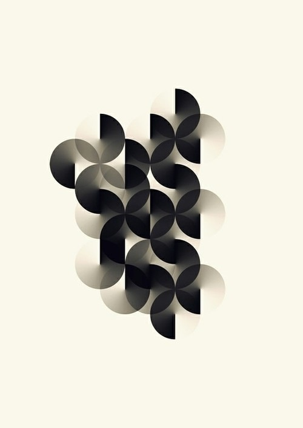

To think about the assignment, I took inspiration from the rotating and shifting fan.

Starting from thinking about line and rotation, I initially ideated the movement and math as shown in my hand draft:
Based on our very initial math, I have 9 rotating lines lined up. We have the ideal movement, however the fan wasn't being drawn
After doing some research, I understand that to keep the movement and have the lines leaving tracks behind, we'd have to introduce lineSegment. And here's a reference fanning code I pulled from the internet. I was mainly thinking about how to inter exchange the variable i with my initial value of i.
Combining my code with the reference code's variable, I got some result. However it is not what I want. I realized I should define my "i" value differently from what I originally thought.
Going back to the reference code I pulled, I modified it to keep the original movement, and change fanRadius and line length to what I desire. I duplicated the code to constantly translate the starting point and drew each circles seperately, adjusting speed and position each on their own